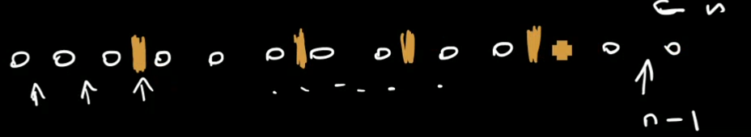

1. DEF E
E=({ϵ},{ϵ→0})
1.1. Przykład zastosowania
Normalnie A+B działa tylko wtedy kiedy A∩B=∅.
Jeżeli nie mamy tego zapewnionego — kolorujemy klasy przy pomocy E1 oraz E2: A≅A×E1∣(a,ϵ1)∣=∣a∣+∣ϵ1∣=∣a∣B≅B×E2∣(b,ϵ2)∣=∣b∣+∣ϵ2∣=∣b∣ gdzie ϵi=({ϵi},{ϵ1→0}) dla i=1,2.
(Tak samo dla kwadratu kartezjańskiego — kolorujemy i uzyskujemy osobne dwie klasy.)
2. DEF Z
Z=({∘},{∘→1})
2.1. Przykład
Mamy alfabet A=({a,b},∣a∣=∣b∣=1).
Wówczas możemy powiedzieć A≅Z+Z Jednakże, taki zapis jest nieformalny, formalnie wygląda to tak: A≅(Z×E1)+(Z×E2)
Dalej, możemy teraz wykorzystać alfabet do zbudowania wszystkich możliwych słów: W2≅SEQ(A).
2.2. Przykład
Możemy też zbudować liczby naturalne: N≅SEQ(Z).
2.3. Przykład
n=x1+x2+x3+⋯+xk(xi≥1)
Ile jest kompozycji liczby 3?
3=1+2+2+1=1+1+1 — mamy 4 takie kompozycje
SEQ≥1(Z)=Z+(Z×Z)+⋯
Z↔z
OGF: SEQ≥1(Z)(z)↔1−zz
Czyli w zasadzie SEQ≥1(Z)≅N≥1
Zauważmy, że klasą wszystkich kompozycji jest po prostu C≅SEQ(SEQ≥1(Z)).
OGF: C(z)=1−1−zz1=1−2z1−z=1−2z1−1−2zz
[zn]C(z)=[zn]1−2z1−[zn]1−2zz=2n−2n−1=2n−1
Czyli kompozycji liczby n jest 2n−1.
Dodatkowo visual aid:

czyli wybieramy gdzie dać przegródki (mamy takich binarnych wyborów n−1)